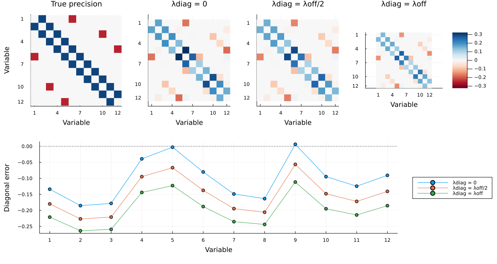

Graphical lasso
In a Gaussian vector x ~ N(0, Σ), two variables are independent given all the others when the corresponding entry of the precision matrix Θ = Σ⁻¹ is zero. A sparse estimate of Θ is therefore an estimate of the conditional-independence graph, and it is also a valid precision matrix when it is symmetric and positive definite. The graphical lasso (Friedman, Hastie and Tibshirani, 2008, doi:10.1093/biostatistics/kxm045) estimates Θ from a sample covariance matrix S by
\[\min_{\Theta=\Theta^\top\succ0}\; P(\Theta) = -\log\det\Theta+\operatorname{tr}(S\Theta) +\lambda\sum_{i\ne j}|\Theta_{ij}|.\]

The sum runs over the full matrix, so each off-diagonal pair is penalized twice, and the diagonal is not penalized. ProximalBase writes the first two terms as LogDetLoss(S) and the penalty as NormL1(1.0, Λ) with the weight matrix Λ equal to λ off the diagonal and zero on it. ADMMSolver applies to this problem with a supported dense Matrix{Float64} or Matrix{Float32} start; Supported problems and the graphical-lasso contract give the remaining requirements.
Two related pages solve different problems. Neighborhood selection fits one lasso regression per variable; that page reports a graph and does not assemble a precision matrix, and separately fitted regressions need not combine into a symmetric positive-definite one. Covariance thresholding soft-thresholds the sample covariance; its zeros are zeros of the covariance, not of the precision matrix, and its estimate can be indefinite.
using LinearAlgebra, Random, ProximalBase, ProximalSolversA sparse precision matrix and a sample
The population precision matrix Θ_true has p = 12 variables, a chain 1 − 2 − ⋯ − 12 with entries 0.3 and three extra edges with entries −0.25. In each row the sum of the absolute values of the off-diagonal entries is at most 0.85, less than the diagonal 1, so Θ_true is strictly diagonally dominant and positive definite.
p, n = 12, 200
Θ_true = Matrix(1.0I, p, p)
for i in 1:p-1
Θ_true[i, i+1] = Θ_true[i+1, i] = 0.3
end
for (i, j) in ((1, 6), (3, 10), (5, 12))
Θ_true[i, j] = Θ_true[j, i] = -0.25
end
@assert maximum(sum(abs, Θ_true[i, :]) - Θ_true[i, i] for i in 1:p) <= 0.85 + 1e-12
@assert isposdef(Θ_true)With Σ_true = inv(Θ_true) = UᵀU from the Cholesky factor U, each row of randn(n, p) * U is zᵀU for a standard normal z, whose covariance is UᵀU = Σ_true. After centering the columns, S = XᵀX/n. The normalization 1/n is part of S, and LogDetLoss(S) has weight one.
Σ_true = inv(Θ_true)
U = cholesky(Symmetric(Σ_true)).U
@assert U' * U ≈ Σ_true
rng = Xoshiro(2026)
X = randn(rng, n, p) * U
X .-= sum(X; dims = 1) ./ n
S = Matrix(Symmetric(X' * X / n))
@assert S == S'The solve
The penalty level is λ = 0.12 on each off-diagonal entry. ADMM splits the objective into the log-determinant part, updated by its proximal operator (computed by ProximalBase from an eigendecomposition; the solver requires the result to be finite, exactly symmetric and to pass a Cholesky factorization), and the penalty, updated by soft thresholding. The consensus iterate after soft thresholding can be indefinite during the iteration. The returned matrix is the consensus iterate, and solve! returns it only if it is exactly symmetric and its Cholesky factorization succeeds in Float64. The identity is an exactly symmetric start whose Cholesky factorization succeeds.
λ = 0.12
Λ = fill(λ, p, p)
Λ[diagind(Λ)] .= 0
f = LogDetLoss(S)
g = NormL1(1.0, Λ)
Θ = Matrix(1.0I, p, p)
method = ADMMSolver(ρ = 1.0, abstol = 1e-10, reltol = 1e-10)
result = solve!(Θ, f, g, method, ProximalOptions(maxiter = 5000))
@assert result.converged && result.minimizer === Θ
@assert result.r_norm <= result.eps_pri && result.s_norm <= result.eps_dual
println((status = result.status, iterations = result.iterations,
primal = result.r_norm, primal_tolerance = result.eps_pri,
dual = result.s_norm, dual_tolerance = result.eps_dual))(status = :converged, iterations = 75, primal = 1.2924871341124184e-9, primal_tolerance = 1.5295543068995928e-9, dual = 1.785139945877151e-10, dual_tolerance = 1.303133543895757e-9)The penalty parameter ρ changes the iterations, not the problem. The loop below solves the same problem with two other values. Compare the printed iteration counts; the estimates agree with Θ within 1e-6.
for ρ in (0.25, 4.0)
other = Matrix(1.0I, p, p)
r = solve!(other, f, g, ADMMSolver(ρ = ρ, abstol = 1e-10, reltol = 1e-10), ProximalOptions(maxiter = 5000))
@assert r.converged && maximum(abs, other - Θ) <= 1e-6
println((ρ = ρ, iterations = r.iterations, largest_difference = maximum(abs, other - Θ)))
end(ρ = 0.25, iterations = 279, largest_difference = 2.1927903937069004e-11)
(ρ = 4.0, iterations = 137, largest_difference = 1.0506127079423777e-9)Check the estimate independently
For this fit, the checks below confirm exact symmetry, isposdef and a positive smallest eigenvalue, and the objective recomputed from S, Λ and Θ agrees with result.minimum.
@assert Θ == Θ' && isposdef(Θ)
smallest_eigenvalue = eigmin(Symmetric(Θ))
@assert smallest_eigenvalue > 0
objective = -logdet(cholesky(Symmetric(Θ))) + dot(S, Θ) + sum(Λ .* abs.(Θ))
@assert abs(result.minimum - objective) <= 1e-10 * max(1, abs(objective))With G = S - Θ⁻¹, the KKT conditions are Gᵢᵢ = 0 on the diagonal, Gᵢⱼ = -Λᵢⱼ sign(Θᵢⱼ) at a nonzero off-diagonal entry and |Gᵢⱼ| ≤ Λᵢⱼ at a zero. The violation below takes the largest of |Gᵢᵢ|, |Gᵢⱼ + Λᵢⱼ sign(Θᵢⱼ)| and max(|Gᵢⱼ| - Λᵢⱼ, 0) over the entries, divided by max(1, maximum(abs, S)). The solver's residual tests do not bound this violation; the assertion below is a separate check of this fit.
G = S - inv(Θ)
kkt = maximum(i == j ? abs(G[i, i]) :
iszero(Θ[i, j]) ? max(abs(G[i, j]) - Λ[i, j], 0) : abs(G[i, j] + Λ[i, j] * sign(Θ[i, j]))
for i in 1:p, j in 1:p) / max(1, maximum(abs, S))
@assert kkt <= 1e-8The dual problem maximizes log det W + p over symmetric W = S + U ≻ 0 with Uᵢᵢ = 0 and |Uᵢⱼ| ≤ Λᵢⱼ (the level of g is one). Below, U has a zero diagonal and its off-diagonal entries are those of Θ⁻¹ - S clipped into [-Λᵢⱼ, Λᵢⱼ]. The sum W = S + U is rounded, so the code checks the stored floats in exact rational arithmetic: Wᵢᵢ = Sᵢᵢ and |Wᵢⱼ - Sᵢⱼ| ≤ Λᵢⱼ, the right side being the exact value of the stored weight. It then applies the Float64 Cholesky test to W, which is a working-precision test rather than a proof that W ≻ 0. For an exactly feasible W ≻ 0, weak duality bounds the objective error by the gap P(Θ) - (log det W + p). After both checks, the script reports that gap evaluated in Float64, as a numerical estimate. If a check fails, it reports "not certified".
inverse = inv(Θ)
U_dual = zeros(p, p)
for j in 2:p, i in 1:j-1
U_dual[i, j] = U_dual[j, i] = clamp(inverse[i, j] - S[i, j], -Λ[i, j], Λ[i, j])
end
W = S + U_dual
exact(x) = Rational{BigInt}(x)
in_box = all(exact(W[i, i]) == exact(S[i, i]) for i in 1:p) &&
all(abs(exact(W[i, j]) - exact(S[i, j])) <= exact(Λ[i, j]) for i in 1:p, j in 1:p if i != j)
certified = in_box && isposdef(Symmetric(W))
gap = certified ? objective - (logdet(cholesky(Symmetric(W))) + p) : NaN
certified && @assert -1e-10 <= gap <= 1e-8
println((objective = objective, max_kkt_violation = kkt, smallest_eigenvalue = smallest_eigenvalue,
duality_gap_estimate = certified ? gap : "not certified"))(objective = 14.160606943764504, max_kkt_violation = 3.3379814111977405e-10, smallest_eigenvalue = 0.3909719353585013, duality_gap_estimate = 3.965556771845513e-10)Compare with the true graph
An edge is an unordered pair i < j with a nonzero entry, so each pair is counted once. True positives are estimated edges of the true graph, false positives estimated edges outside it and false negatives true edges that the estimate sets to zero.
edge_pairs = [(i, j) for j in 2:p for i in 1:j-1]
true_edges = count(e -> Θ_true[e...] != 0, edge_pairs)
estimated_edges = count(e -> Θ[e...] != 0, edge_pairs)
tp = count(e -> Θ_true[e...] != 0 && Θ[e...] != 0, edge_pairs)
fp = count(e -> Θ_true[e...] == 0 && Θ[e...] != 0, edge_pairs)
fn = count(e -> Θ_true[e...] != 0 && Θ[e...] == 0, edge_pairs)
@assert true_edges == 14 && tp + fn == true_edges && tp + fp == estimated_edges
largest_false_positive = fp == 0 ? "none" :
maximum(abs(Θ[e...]) for e in edge_pairs if Θ_true[e...] == 0 && Θ[e...] != 0)
smallest_true_positive = tp == 0 ? "none" :
minimum(abs(Θ[e...]) for e in edge_pairs if Θ_true[e...] != 0 && Θ[e...] != 0)
println((pairs = length(edge_pairs), true_edges = true_edges, estimated_edges = estimated_edges,
true_positives = tp, false_positives = fp, false_negatives = fn,
largest_false_positive = largest_false_positive, smallest_true_positive = smallest_true_positive))(pairs = 66, true_edges = 14, estimated_edges = 25, true_positives = 14, false_positives = 11, false_negatives = 0, largest_false_positive = 0.10451464522442033, smallest_true_positive = 0.09140909534624334)The errors of Θ against Θ_true are compared with those of inv(S), which minimizes the objective at λ = 0 when S is positive definite.
errors = (frobenius = norm(Θ - Θ_true), spectral = opnorm(Θ - Θ_true),
frobenius_inv_S = norm(inv(S) - Θ_true), spectral_inv_S = opnorm(inv(S) - Θ_true))
println(errors)(frobenius = 0.7644976459858615, spectral = 0.4136744274944375, frobenius_inv_S = 0.9466164147008589, spectral_inv_S = 0.5333932430934339)These numbers describe one simulated sample. The assertions check statistical sanity rather than exact draws: at least 10 of the 14 true edges are found, some pairs are zero, and the Frobenius error is at most half of norm(Θ_true).
@assert tp >= 10 && estimated_edges < length(edge_pairs)
@assert errors.frobenius <= norm(Θ_true) / 2Small nonzero entries and finite-sample graph errors are normal. With n = 200 observations the sample covariance differs from Σ_true, and the estimate can have nonzero entries for pairs that are conditionally independent in the population (the false positives printed above, with the largest of their magnitudes, or "none" when there are none). The edge counts and magnitudes are observations for this sample and this λ. At exact minimizers, a larger λ gives a total off-diagonal ℓ₁ norm Σᵢ≠ⱼ |Θᵢⱼ| that is no larger, but the number of zeros and the individual entries need not change monotonically with λ. Regularization changes the fitted magnitudes and can bias them; the errors printed above are differences on this one sample.
Reading the figure
The first two heatmaps share one symmetric color scale. Their diagonals are hidden (displayed as zero) to make the off-diagonal structure visible; the estimate's diagonal is not penalized. The third panel compares the graphs: above the diagonal, the true edges; below it, the estimated edges, so a symmetric pattern means agreement.
using Plots
shown = [copy(Θ_true), copy(Θ)]
for matrix in shown
matrix[diagind(matrix)] .= 0.0
end
limit = maximum(maximum(abs, matrix) for matrix in shown)
panels = [heatmap(1:p, 1:p, matrix; title = title, color = :RdBu, clims = (-limit, limit),
aspect_ratio = 1, yflip = true, xlabel = "Variable", ylabel = "Variable", xticks = 1:p, yticks = 1:p)
for (title, matrix) in zip(("True precision (off-diagonal)", "Estimate (off-diagonal)"), shown)]
edges = [i < j ? Float64(Θ_true[i, j] != 0) : i > j ? Float64(Θ[i, j] != 0) : 0.0 for i in 1:p, j in 1:p]
push!(panels, heatmap(1:p, 1:p, edges; title = "Edges: upper true,\nlower estimated",
color = cgrad([:white, :darkorange]), clims = (0, 1), colorbar = false, aspect_ratio = 1,
yflip = true, xlabel = "Variable", ylabel = "Variable", xticks = 1:p, yticks = 1:p))
figure = plot(panels...; layout = (1, 3), size = (1200, 420), titlefontsize = 12,
left_margin = 4Plots.mm, bottom_margin = 5Plots.mm, top_margin = 3Plots.mm)
savefig(figure, "graphical_lasso.svg")
nothingWhat we learned
On this sample, the graphical lasso fit has zero entries, is exactly symmetric and passes the checks isposdef and a positive smallest eigenvalue. In general, a normal return of solve! on this graphical-lasso path gives an exactly symmetric matrix whose Cholesky factorization succeeds in its element type; this working-precision test does not prove positive definiteness of a matrix close to singular, and a small penalty can give a dense estimate. The checks on this page come from the data: the recomputed objective, the KKT violation, the smallest eigenvalue and, when the stored dual matrix passes the exact box check and the Cholesky test, a numerical estimate of the duality gap. converged reports the ADMM residual tests, with a stationarity check when both computed residuals are zero; it is not by itself a certificate, and the residual tests do not enforce the normalized 1e-8 KKT bound asserted above. The edge counts and errors depend on the sample, on n and on λ; this page does not choose λ from the data.
The figure is generated from this script during the documentation build. Run the script alone for the same seeded calculations and checks without loading Plots.